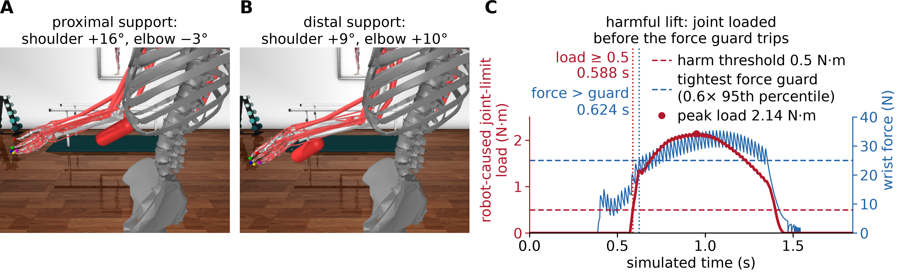
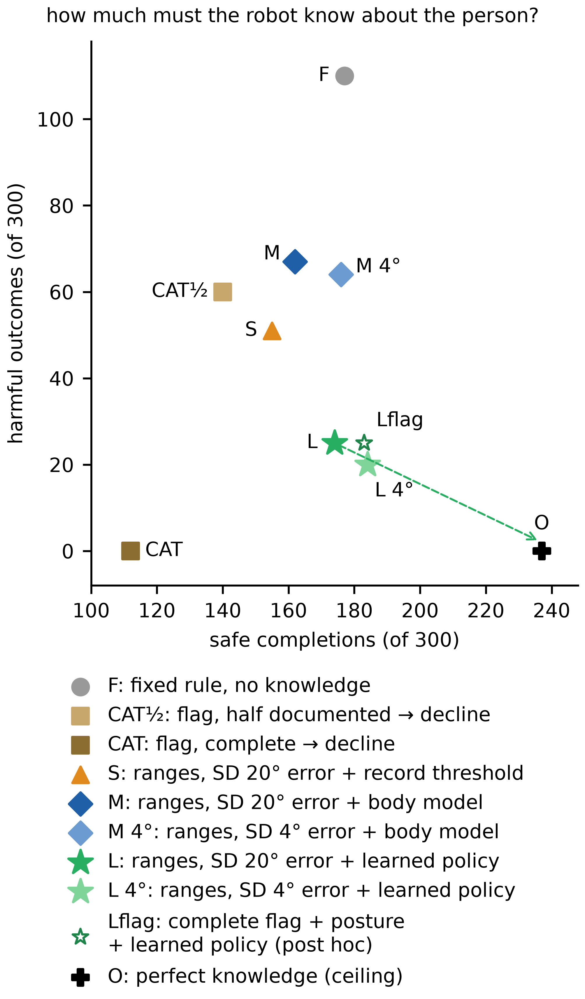
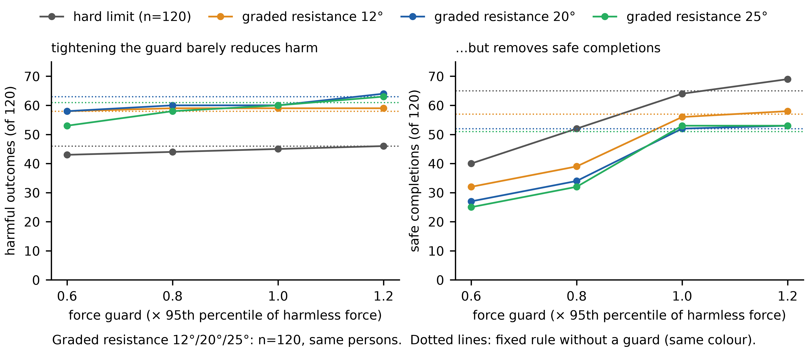
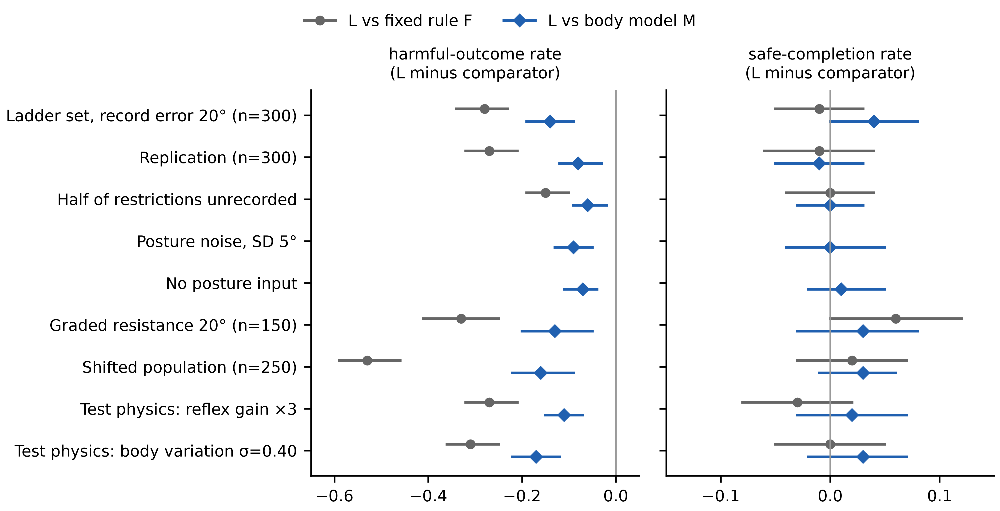

2026 · simulation study
When a robot supports a multi-joint limb from outside, the joint it loads is not on the axis of its force sensor.
Mu-Hua (Maurice) Wang · National Yang Ming Chiao Tung University
Brief Research Report prepared for Frontiers in Robotics and AI (not yet submitted). Simulation study.
Same simulated person, two robots: a fixed rule that knows nothing about the person (left), and a learned policy that reads the care record first (right).
Many care recipients cannot move a shoulder or elbow freely, and a robot lifting their forearm can press a restricted joint into the end of its range. Robot safety rests on contact-force limits, but a joint load that matters is only a few newtons at the contact point, hidden under the limb's own weight. In a musculoskeletal simulation (MuJoCo/MyoSuite) of a robot lifting the forearm from below, controllers differ only in what they know about the person, from nothing to everything. Two prespecified hypotheses were tested: force-magnitude guards do not reduce harmful outcomes by significantly more than 5 percentage points, and knowledge of the person, with the option to decline, reduces them without losing safe completions.

The robot loads the joint before its force sensor notices. (A, B) Proximal support elevates mainly the shoulder, distal support also flexes the elbow. (C) One harmful lift of the fixed rule (restricted elbow): the robot-caused joint-limit load passes 0.5 N·m at 0.588 s, before the wrist force exceeds the tightest force-guard threshold (25.05 N) at 0.624 s.
What "harm" means here. The load the robot presses into the shoulder-elevation and elbow-flexion limits, summed over the two joints. A harmful outcome is a load of at least 0.5 N·m; a safe completion is a completed lift below it. This is a mechanical exposure proxy, not injury.
Where the robot holds the arm decides which joint moves (the figure's panels A and B, in motion).
The lift of panel C, in slow motion: even the tightest guard would trip only at 0.64 s, after the joint load had passed 0.5 N·m. In many other harmful lifts the guard never tripped at all.
Declining is a decision, not a failure: when no lift is predicted to be safe, the learned policy hands the task back to a human carer.

Six levels of knowledge, each paired with a decision rule; 300 new simulated persons, lower right is better. Hollow marker (post hoc): a policy learned from the complete flag and settled posture only. Dashed arrow: the gap to perfect knowledge.
Declining everyone with a restriction flag removed all harmful outcomes but also 37 % of safe completions; the learned policy completed 62 more lifts safely at the cost of 25 harmful outcomes. The hollow marker shows that the flag rung is limited by its decline-everyone rule, not by the knowledge. Perfect knowledge, a ceiling, reaches 237 safe and 0 harmful: of the 63 safe completions the learned policy missed, 47 were unnecessary refusals, and 18 of its 25 harmful outcomes were persons with no safe lift.

Tightening the guard removes safe completions (right) but barely changes harmful outcomes (left). Hard limit and graded end-range resistance of 12, 20 and 25°, 120 new persons. Dotted: the fixed rule without a guard.
In the simulated arm, 0.5 N·m at a joint corresponds to only about 1–3 N at the contact, small against a forearm-and-hand weight of about 17 N and guard thresholds of 25–50 N (post hoc, one person). Among the 600 persons of rounds 24–25, every harmful lift of the fixed rule stayed below the ISO/TS 15066 contact-force limit for the lower arm (160 N; simulated peak force median 34 N, maximum 154 N). Force limits remain necessary for contact safety but are not sufficient for joints.

Learned policy minus fixed rule (grey) or body model (blue), paired 95 % CIs, in every prespecified confirmation condition, without retraining. Posture conditions were compared with the body model only.
The reduction replicated on new persons (−0.27 [−0.32, −0.21] against the fixed rule) and held under posture noise, over-estimated records, a shifted population with more and tighter restrictions, graded end-range resistance and two physics perturbations. Safe completions relative to the fixed rule: −0.01 [−0.06, +0.04] in the replication, +0.02 [−0.03, +0.07] in the shifted population, +0.06 [0.00, +0.12] under 20° graded resistance. With half the restrictions unrecorded (64 vs. 108 harmful), declining everyone flagged harmed fewer persons (50 vs. 64) at 29 fewer safe completions.